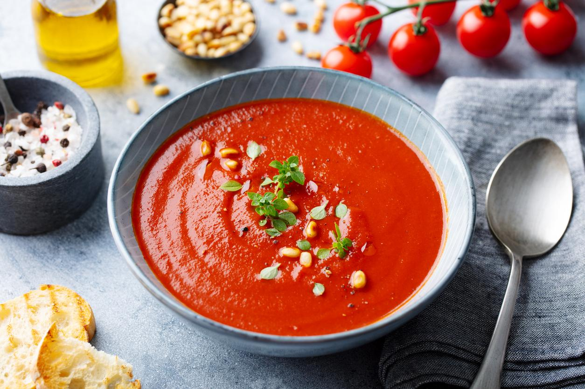

Sopa de Tomate
Por Chef Vegano
DNI:12345678A
Ingredientes:
- Tomates:
3unidades
- Ajo:
1diente
- Agua:
500mililitros
Preparación:
- Cocer los tomates y el ajo en agua durante 10 minutos.
- Triturar todo en una licuadora.
- Servir caliente con un poco de sal al gusto.